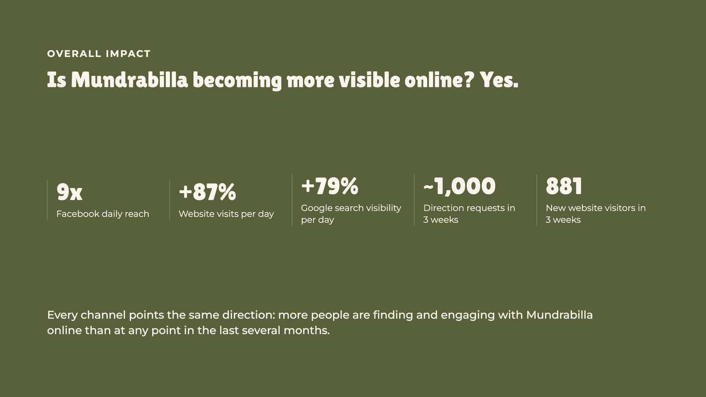

Reporting what the data can and cannot prove
Three weeks after the relaunch, the owner of Mundrabilla Roadhouse needed to know whether the marketing was working. I answered from four data sources in one short report.
What the report found
9x
Facebook daily reach
+87%
website visits per day, from about 34 to about 64
+79%
Google search impressions per day
+70%
clicks from Google per day
~1,000
direction requests from Google in three weeks
881
new website visitors in three weeks
8.87 to 7.91
average Google position
38 terms, 0 clicks
the search gap that set the next priority
Mundrabilla Roadhouse, 30 August to 18 September 2026, compared with the daily average before the relaunch. Sources: Meta Business Suite, GA4, Google Search Console, Google Business Profile.


Context
The answer was spread across four dashboards: Meta Business Suite for social, GA4 for the website, Search Console for Google search, and Google Business Profile for calls and directions. The owner is not a marketer and needed one clear read.
Challenge
The periods did not match. Social had 20 days of activity to compare with 189 quiet days, and the website had 20 days against 60. Meta's own dashboard showed declines that were misleading for the same reason. The website was growing too, with more than one possible cause.
Approach
- Pulled the figures from all four sources on the same day.
- Converted every total to a daily average, so periods of different lengths could be compared.
- Separated the lift that comes from posting again from the effect of particular content.
- Wrote down what the data could not show, and asked the owner for her own read on enquiries and walk-ins.
Build
A seven-slide summary, a written report with the full figures and sources, and a covering email. Select a slide to see it full size.


Evidence
The finding
Every Google click came from people already searching for Mundrabilla by name. The site also appeared for 38 other searches, such as "fuel on the Nullarbor", a total of 101 times at positions of about 9 to 11. None of them produced a click, in either period.
So the roadhouse was easy to find for people who already knew it and close to invisible for people planning a crossing who did not.
The decision
I set search visibility for those planning searches as the next priority.
Pages I created on the Mundrabilla site
- Crossing the Nullarbor, a guide to the apps and resources travellers use
- Nullarbor fuel stops
- Roadhouse menu
Whether they win clicks from those planning searches is the next thing to measure.
Results
The owner received one clear account: what was working, what was uncertain, and what to do next.
Every channel pointed the same way. More people were finding Mundrabilla online than at any point in the previous several months. Average Google position for the site moved from 8.87 to 7.91.
What I learned
A report earns trust when it says what it cannot prove. Telling the owner that no booking data existed also pointed to the next job: tracking phone taps and booking clicks, so the next report can talk about stays.